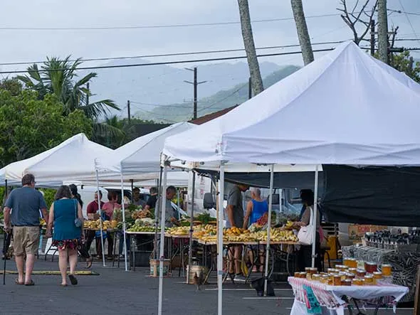

Weather
Today's Temp:
Wind Speed:
Feels Like:

Close to 40 vendors participate in the weekly Princeville Farmers Market. Join us for a wide selection of fresh local fruits, vegetables, and locally produced crafts and products.Every Saturday - 7am-noon
Today's Temp:
Wind Speed:
Feels Like:
Need a quick 'pick-me-up'? A healthy snack? Stop by The Spot and find what you need.
The best sandwiches on Kauai are available at The Sandwich Isle Deli.
The friendly agents at Sotheby's Oceanfront Realty are the leading realty experts in Princeville.